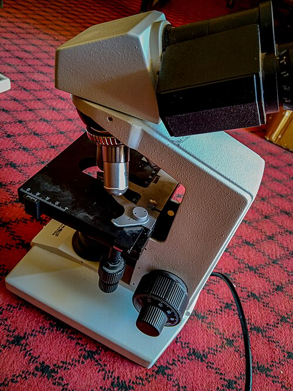

See what blur hides.
From diffraction and Rayleigh to confocal and super-resolution.
Explore optical learning path
From diffraction and Rayleigh to confocal and super-resolution.
Explore optical learning pathA point source forms a diffraction pattern through a finite circular pupil. Its bright central region is the Airy disk, surrounded by weaker rings. Two nearby emitters produce overlapping point-spread functions (PSFs).
Under the Rayleigh criterion, the center of one ideal Airy pattern lies at the first minimum of the other. This is a useful convention, not a universal boundary in noisy images.
NA = n sin θ
dRayleigh ≈ 0.61 λ / NA
dAbbe ≈ λ / (2 NA)
Here θ is the collection half-angle and n the immersion-medium refractive index. Higher NA captures larger diffraction angles and finer spatial information. Shorter wavelengths improve the ideal limit. Abbe and Rayleigh describe different criteria; their numerical factors are not interchangeable.
Select a component · Tab + Enter also works. Original schematic, not to scale.
The fluorescent label emits light. Its intensity reports labels and photophysics, not every structure in the cell.
For an aberration-free circular pupil, I(r) ∝ [2J₁(u)/u]² with u = 2πNA·r/λ. Incoherent emitter intensities add. At λ = 550 nm and NA = 1.40, Rayleigh separation is about 240 nm. Increasing screen magnification changes neither λ nor NA.
Sampling, contrast, aberrations, background and noise matter in real microscopy. NA greater than 1 requires a suitable immersion medium. The original experiment below retains its ideal Airy model and controls.
Keep separation at 300 nm. Increase NA until the criterion is met; then change display magnification. Does the physical separation limit change?
A dye, fluorescent protein or other fluorophore absorbs light and may emit a photon after relaxation. Labels provide molecular specificity: the image maps labelled structures, not every structure in the specimen.
Click a transition, or use Tab and Enter. Excitation supplies energy; fluorescence usually returns a lower-energy, longer-wavelength photon.
E = hc / λ
Typically: λemission > λexcitation
The Stokes shift helps separate excitation from fluorescence with a dichroic mirror and filters. Brightness also depends on concentration, excitation, quantum yield and detection efficiency.
Not every absorbed photon becomes a detected photon. Non-radiative decay reduces fluorescence yield; repeated illumination can cause irreversible photobleaching or damage the sample. Spectra overlap, so colour channels can mix. A fluorescence colour is not necessarily the specimen's visible-light colour.
Fluorescent labels distinguish the spindle (green), chromosomes (light blue) and membrane/cytoplasm (red) of a newt lung cell in anaphase. Contrast maps detected fluorescence, not the cell’s natural colours.
Notice: The labelled spindle surrounds the separating chromosomes. Fine details can merge under the optical PSF; this reproduction does not establish a numerical resolution limit.
Try diffraction and resolution →A focused excitation spot is scanned across the sample. A detection pinhole in a plane conjugate to the focus preferentially rejects defocused fluorescence. Smaller apertures improve rejection but also discard useful signal.
Fixed synthetic structures at z = −1, 0, +1 µm; XY field 4 × 4 µm. Both panels show expected intensities on the same 0–14 scale. No automatic brightness normalization.
Bars show each layer's collected fraction relative to its fully excited, open-detector signal. Contributions are not forced to sum to 100%.
Click an optical component. The focus marker and pinhole opening follow the controls; the paths are schematic, not a ray trace.
Three stationary planes contain 48 equal emitters each. For defocus Δz (µm), excitation weight E = exp[−½(Δz/0.8)²]. The normalized pinhole-plane Gaussian width is w = 0.52√[1 + (Δz/0.55)²]. The transmitted fraction is T = 1 − exp[−a²/(2w²)], with a the selected pinhole diameter in Airy units; radii are normalized to the radius of a 1 AU aperture.
One Airy unit conventionally means a pinhole diameter of about 1.22λemM/NA at the conjugate image plane (M is magnification to that plane). Our Gaussian surrogate has approximately 84% in-focus transmission at 1 AU; it does not model Airy rings. Each emitter contributes a normalized lateral Gaussian with σ = 0.10√[1 + (Δz/0.6)²] µm, weighted by E for the open detector or ET for the pinhole. Layer readouts use integrated weights before field cropping.
This model demonstrates axial rejection and throughput, not a calibrated confocal PSF or lateral super-resolution. It excludes detector noise, bleaching, scattering and aberrations; all displayed scans are computed expected signals. In real imaging, losing photons can worsen signal-to-noise even when background falls. No claim of optimal pinhole size is made.
Check your understanding: a narrow pinhole cannot recover signal that was never collected. Optical sectioning rejects depth background; it is distinct from the super-resolution mechanisms below.
These completed laboratories keep their original calculations and challenges. Choose a mechanism, then return here to compare what changed.
Excite fluorescence, then stimulate emission around a central zero so only a smaller region contributes to fluorescence detection.
d ≈ d₀/√(1 + I/Isat)
The ideal width law assumes a well-formed central zero and suitable photophysics. Dose, bleaching and alignment constrain real performance.
Switch sparse molecules into bright states, estimate their positions, and accumulate localizations over many frames.
Ideal photon-limited localization scales roughly as σPSF/√N.
The scaling neglects background and pixelation. Overlapping emitters bias fits; drift and labelling density also limit reconstructed structure. Localization precision is not PSF width or image resolution.
Known illumination patterns mix fine sample frequencies into detectable Moiré information. Multiple phases and directions enable reconstruction.
fbeat = |fsample − fpattern|
Phases separate mixed contributions; orientations recover directional information. The existing six-frame lesson targets two stripe directions, not arbitrary isotropic 3D samples.
These are selected milestones, not a claim that all modern methods began in those years. Fluorescent labels, optical sectioning, detectors and computation developed together; resolution alone does not describe imaging quality.
Resolution, diffraction and NA: Lecture 3 pp. 32–40 and Lecture 4 pp. 5–6. Milestone overview: Lecture 3 pp. 41–45. Fluorescence and confocal: Lecture 3 pp. 46–48; Lecture 4 pp. 12–14. STED, STORM and SIM: Lecture 4 pp. 17–29. Explanations and diagrams here are original teaching summaries, not copied lecture slides.

The fluorescence micrograph is stored locally. Full image provenance and modifications are recorded in image credits. Diagrams and confocal images elsewhere on this page are synthetic teaching illustrations.
Compare the five instrument families, check six cross-method concepts and keep a downloadable lab note.